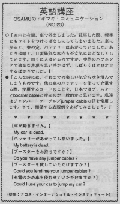

車が動きません。
Do you have jumper cables? Osamu and his wife went driving at night. When he parked, he carelessly left his lights on. When he returned to his car, of course his battery was dead. It was dark around there already. Normally, his wife would be talkative and cheerful but she kept quiet and it was clear that she was anxious. Osamu couldn't explain what had happened to the people around him. He was flustered and didn't know what to do.If you leave your lights on your car will die and not run. People sometimes are careless and will let their car die. Often people will carry jumper cables in their car. If they have family or friends, they will call them first. If they don’t have anyone at all to call and are in a parking lot, they might ask a stranger to help. Some strangers are very kind and will help out. In Hawaii, this is called the “aloha spirit.” In the mainland, they are more cautious of asking strangers for help. A Japanese person might be nervous about asking. If it’s a man or there are several people it’s ok to try. If you are a woman by yourself, you should not get help from strangers. It’s too dangerous.
家内と夜間、車で外出しました。駐車した際、軽率にもライトをつけっぱなしにしてしまいました。車に戻ると、案の定、バッテリーはあがっていました。当たりは暗く、日頃、陽気な家内も不安気におとなしくしています。回りに人はいるのですが、突然のハプニングで適切な表現も思い浮かばず、しばらくはオロオロするばかりでした。
こんな時には、それまでの楽しい気分も吹き飛んでしまうものです。他の車のバッテリーを使って充電する際、使用するコードのことを、日本ではブースター／booster cable と呼ぶのが一般的かと思います。私達はジャンパー・ケーブル／jumper cable の語を常用します。さて、関係する表現例をあげてみましょう。
車が動きません。
My car is dead.
My car won´t start.
バッテリーがあがってしまいました。
My battery is dead.
ブースターをお持ちですか。
Do you have any jumper cables?
ブースターを貸して頂けますか。
Could you lend me your jumper cables?
充電のため、車を使わせて頂けますか。
Could I use yor car to jump my car?

| © 1995-2013 NACOS International Institute. All Rights Reserved. |